8.582 s
Famoso · 1/4 英里
加州 Famoso 赛道,标准 Michelin Pilot Sport 4S 公路胎:世界最快加速量产车。DragTimes 的 Brooks Weiselblat 驾驶,连续 11 次弹射起步,成绩无衰减。
RIMAC AUTOMOBILI · CROATIA · EST. 2009
以亚得里亚海突发风暴为名的电动超跑
一家超跑公司,从车库创业为起点。
Mate Rimac 19 岁那年,把这台用于漂移和场地赛的 E30 改装成纯电动车——e-M3。它最终进化到约 600 hp、900 Nm,0–100 km/h 3.3 秒,并创下 5 项电动车世界纪录。2009 年,Rimac Automobili 在克罗地亚萨格勒布近郊的 Sveta Nedelja 成立。
「说实话,当年在车库里折腾第一台车的时候,我做梦也想不到 15 年后我们会在这里。早年有很多次,我们都以为公司撑不下去了。」
nevera,克罗地亚语:亚得里亚海上突发的雷暴——来得快、猛,而且带电。2021 年 6 月 1 日,量产版 C_Two 以此为名登场。
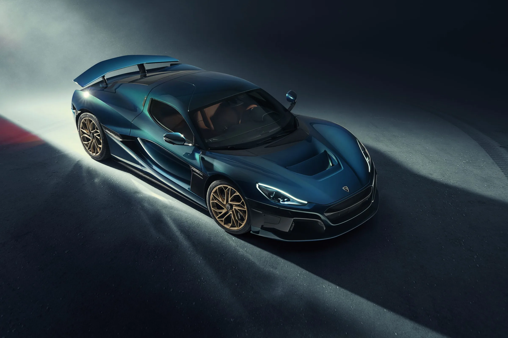
Nevera 限量 150 台,每台都在克罗地亚手工制造,并由 Mate Rimac 本人测试、签署后交付。1,914 hp、258 mph、约 200 万欧元——2021 年发布时,这些数字没有一台量产电动车接近过。
DESIGN
贯穿车身的「cravat」领带特征致敬 17 世纪克罗地亚的领带文化,2011 年首次出现在 Concept_One 上;在 Nevera 上,它同时承担引导气流的功效。
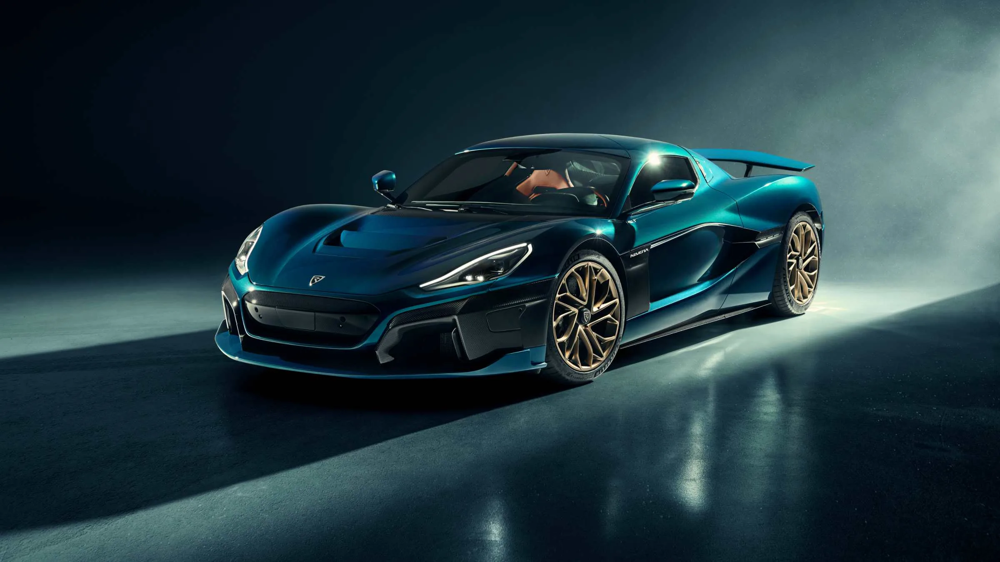
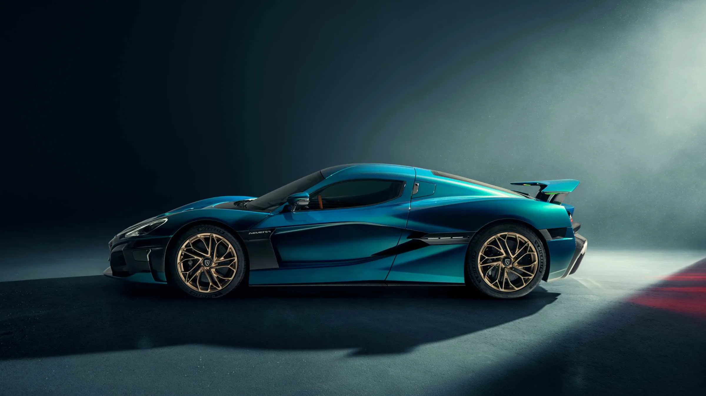
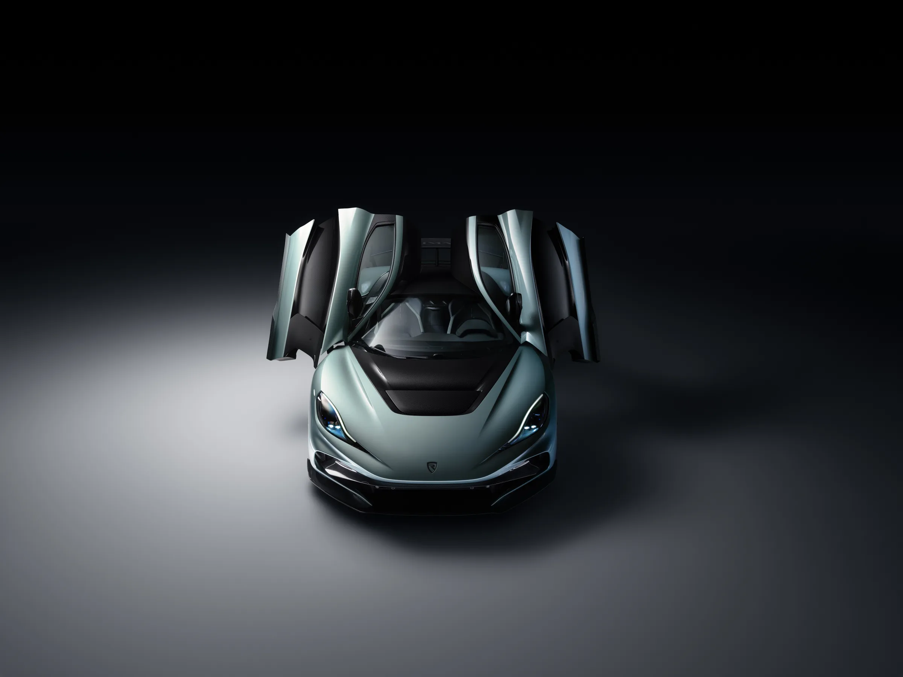
「就是它。十年前我开始这段『不可能的旅程』时,脑海里想的就是这台车。它生来就是为了超越——为了把标准再抬高一次。」
Nevera 没有中央发动机,也没有传统变速箱——四台独立电机直接驱动四个车轮,扭矩矢量系统每秒 100 次重新计算每个车轮的分配。
这是 Nevera 与燃油超跑的分界线:动力不再是发动机经变速箱的分配,而是四个独立、无级、瞬时可调的扭矩源。
前轴两台碳套筒永磁电机各 226 kW / 270 Nm,后轴两台各 450 kW / 900 Nm。R-AWTV(Rimac All-Wheel Torque Vectoring)以每秒 100 次的频率对每个车轮独立分配正/负扭矩——加速、单轮限滑、弯中车身姿态,都用扭矩本身完成,而不只依赖刹车。
选择驾驶场景,或直接拖动滑杆,看 R-AWTV 把 2,340 Nm 电机扭矩送往何处。数值为示意模拟,非实车标定。
前轮上限 270 Nm · 后轮上限 900 Nm(单电机峰值)
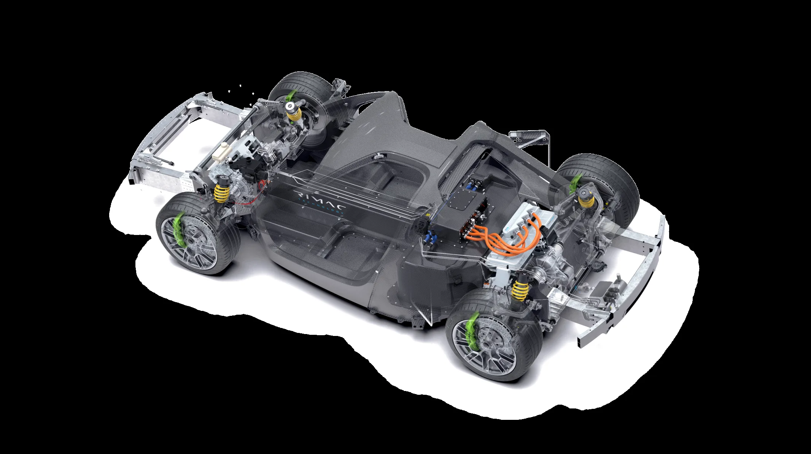
碳纤维单体壳与作为结构件的电池包构成滑板底盘,四台电机与单速减速器分置四角。官方工程拆解视图:橙色为高压线束,黄色为减振器。
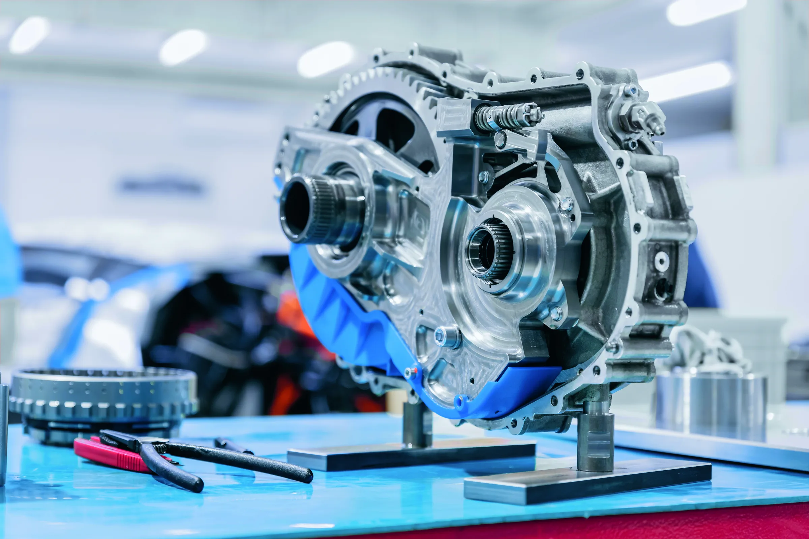
每个电驱单元都是电机、逆变器与单速减速器的集成体。前轴为两台独立单速变速箱,后轴为双电机单壳体设计——没有换挡,也就没有换挡中断。
ENGINEERING
同一套电池与电驱能力,也以 Rimac Technology 之名供应全球车企,从超跑到量产电动平台;两条业务线互为验证。
从 CNC 铣一枚徽标,到手工铺碳纤维、调漆、缝制座椅——每一台 Nevera 的总装约 5 周,年产最高 50 台。
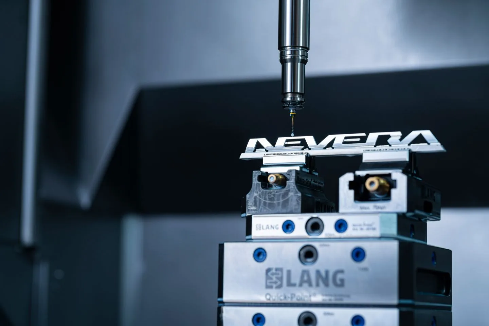
NEVERA 徽标逐字从铝棒上CNC 精铣而来,公差以微米计。
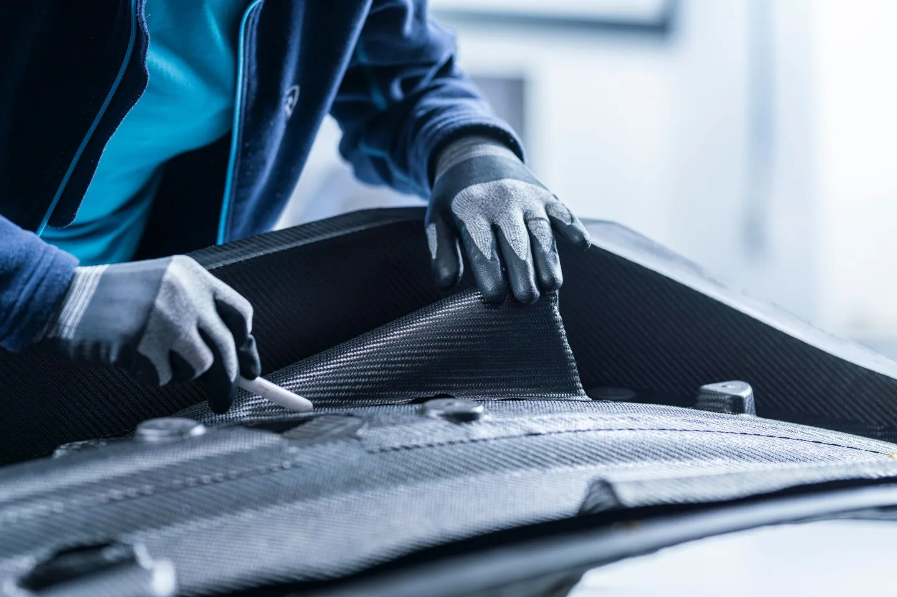
大型碳纤维结构件的铺层与修整全部手工完成,编织纹理肉眼可辨。
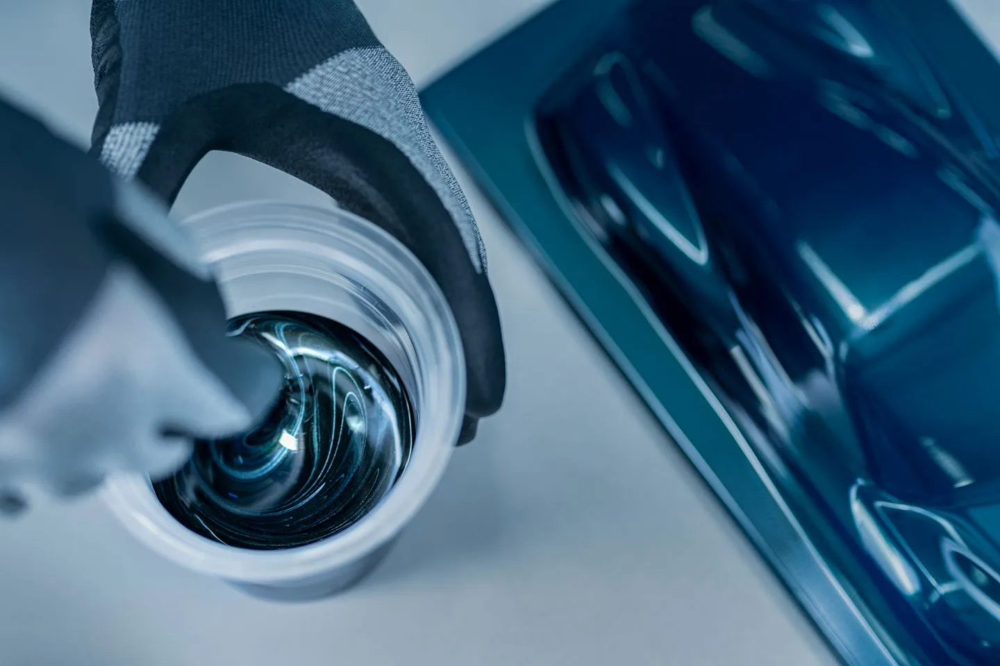
每一种金属漆都单独调配试色——标准色 36 种,定制另计。
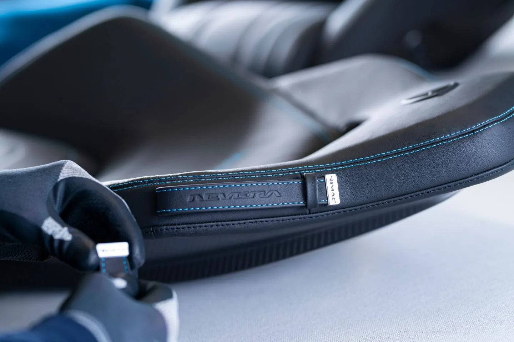
座椅皮质与缝线逐台定制, NEVERA 刻字压印于侧翼——每台都独一无二。
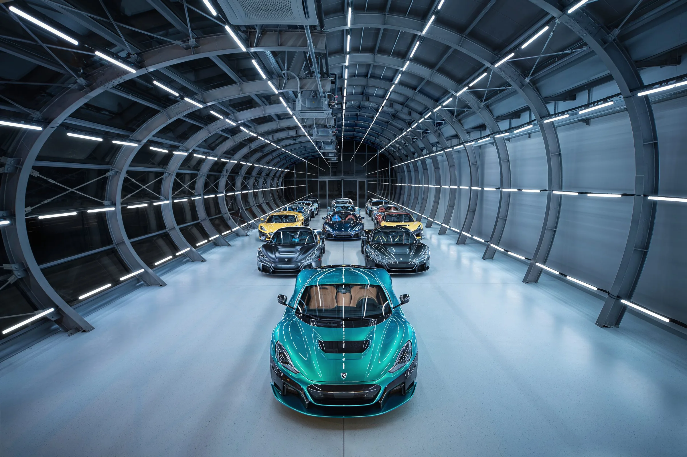
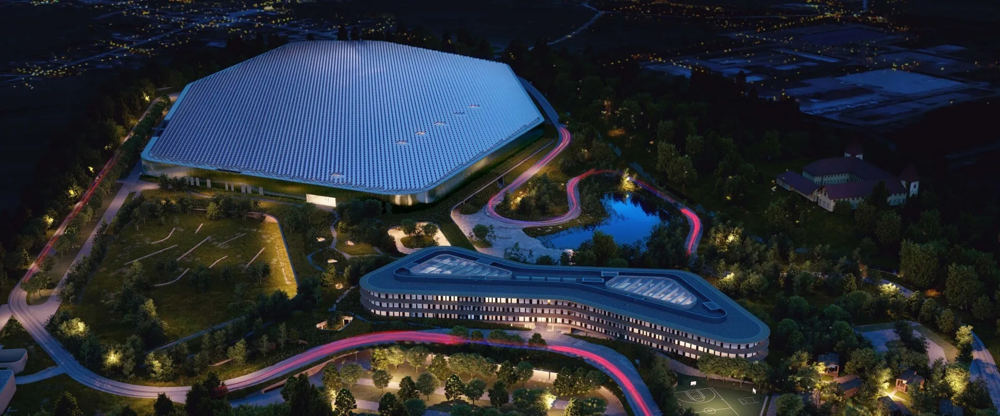
萨格勒布近郊的 Rimac 园区一期 2024 年完工:75,000 m² 生产设施,累计投资 1.2 亿欧元。Nevera 与 Nevera R 的总装、复合材料、CNC、内饰与喷漆都在这里,另有三条为欧洲高端车企服务的高压电池产线。
2023 年 5 月 17 日,ATP Papenburg:一天,23 项性能纪录。驾驶者:Rimac 试车手 Goran Drndak。验证:RaceLogic 与 Dewesoft 双独立测量。
17.05.2023 · ATP PAPENBURG
4.0 km 直道,Michelin Cup 2R 公路胎,非预铺沥青,标准 one-foot rollout。纪录车涂装致敬 2011 年那台创纪录的电动宝马 e-M3。
上表为 23 项中的 10 项;完整名单见 Rimac 官方新闻稿(2023-05-17)。
「今天我们造出的这台车,从 0 加速到 400 再刹停,比 McLaren F1 加速到 350 km/h 还快。而且它可以一遍又一遍地做到,顺手把其他所有性能纪录都破了。」
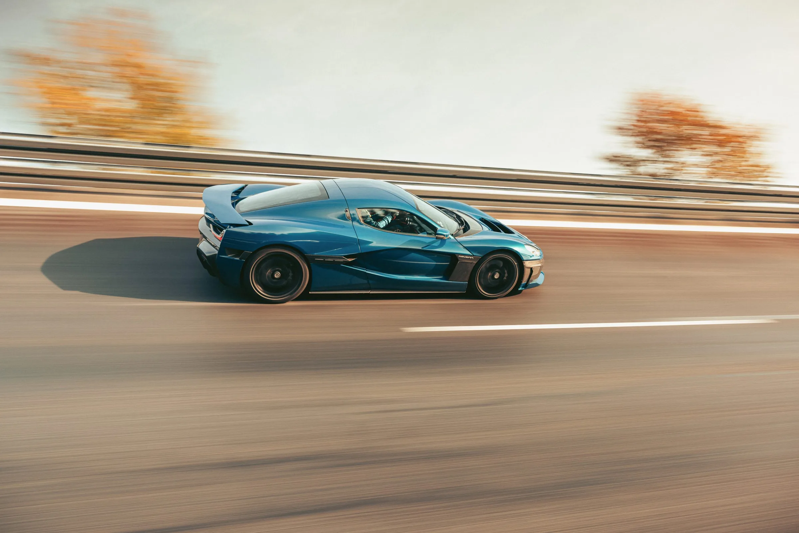
ATP Papenburg 两条 4 km 直道,RaceLogic V-Box 测量,首席测试与开发驾驶 Miro Zrnčević 执方向盘,Michelin Cup 2R 轮胎与米其林技师现场支持。412 km/h——2018 年 C_Two 发布时公开立下的目标,在累计 160 万小时研发之后兑现。客户交付车出厂限速 352 km/h,极速只在厂家监督的活动中释放。
「以 412 km/h 行驶,意味着以三分之一倍音速前进。」Zrnčević 说。而这台车还能单次充电长途行驶、攻下紧凑赛道、漂移——加速与极速两项纪录,同一台车。
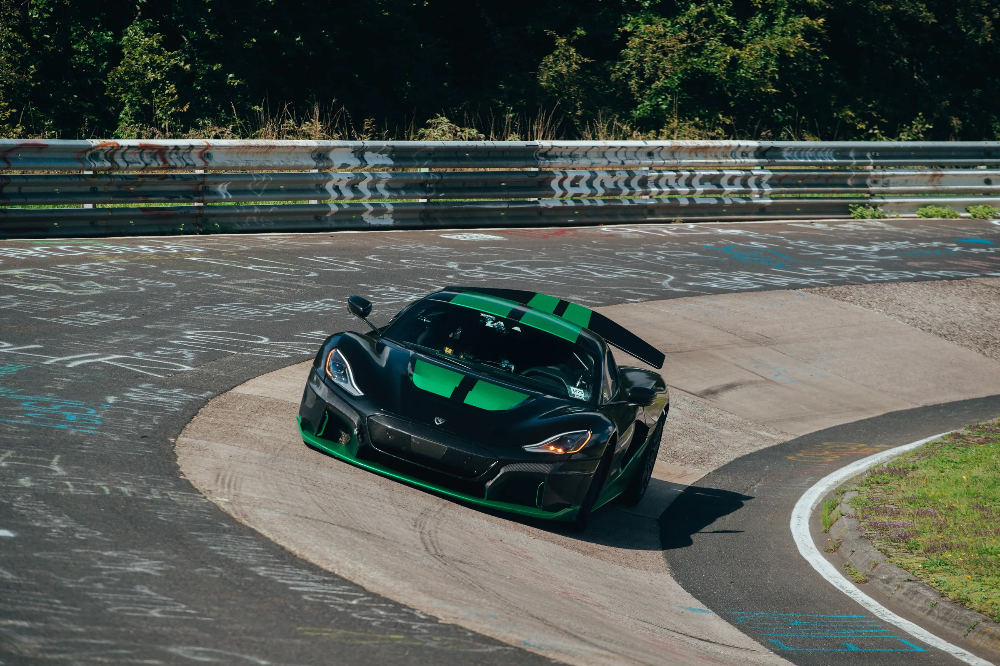
Rimac 第一次进军纽博格林北环:圈速来自虚拟性能优化与仅约 20 圈的行业池测试;练习周天气多变,计时日是当年赛道最热的一天。20.832 km 全程 7:05.298(20.6 km 布局 7:00.928),把此前量产电动车圈速纪录缩短 20 秒,由 TÜV SÜD 独立验证。Martin Kodrić 驾驶,Michelin Cup2R。
「它在城里温和好用,在曲折的乡道上令人兴奋,长途舒适,而到了赛道上,它快得具有毁灭性。」——Martin Kodrić
「用 Nevera 破纪录,是整个 Rimac 团队创新与投入的证明。我们第一次来纽北就能有这样的成绩——虚拟性能优化,加上只有大约 20 圈的行业池测试——我为这个结果骄傲。」
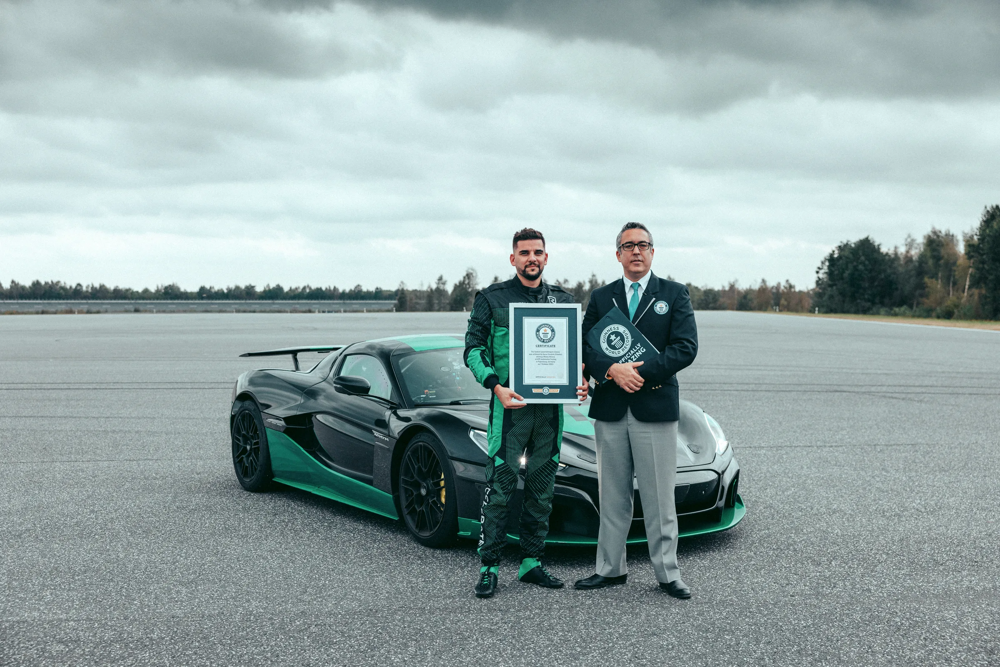
四电机可以直接全功率反转。2023 年 11 月 7 日,Goran Drndak 在 ATP 倒着跑出 171.34 mph(275.74 km/h),吉尼斯官方见证、Dewesoft 验证——1967 年 Miura 用 V12 正向才达到这个速度。
「跑到一半才慢慢适应——你面朝正后方,看着景色加速远去,脖子上的感觉和重刹车几乎一样。」Drndak 说,「这台车完全不是为倒着开设计的,但它又轻松拿下一项纪录。」
Famoso · 1/4 英里
加州 Famoso 赛道,标准 Michelin Pilot Sport 4S 公路胎:世界最快加速量产车。DragTimes 的 Brooks Weiselblat 驾驶,连续 11 次弹射起步,成绩无衰减。
Goodwood 爬山赛 · 量产车纪录
2023 年古德伍德速度节的量产车爬山赛纪录;同一台 Time Attack 涂装的 Nevera,一个多月后又拿下纽北。
Nevera Time Attack
纪念 2023 纪录之年的限量版,黑绿涂装致敬 2011 年的电动宝马 e-M3;纽北纪录同日在 The Quail 首发,全部售罄。
2024 年 8 月 16 日发布:从 Hyper GT 转向 Hyper Sportscar——2,107 hp、108 kWh 新电池、固定大尾翼,限量 40 台。
NEVERA R · 2024
同样的四电机架构,更轻的电池、更大的功率、更强的下压力——所有改变的指向只有一个:弯速。
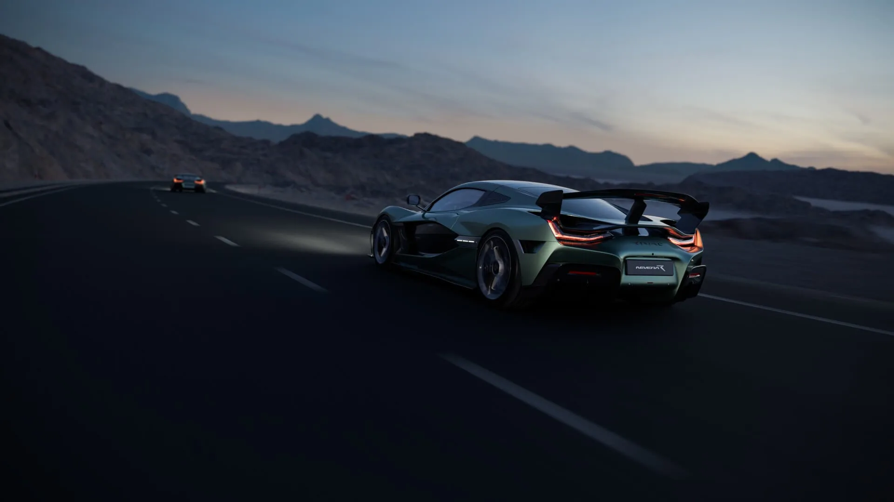
相比标准 Nevera,下压力 +15%、气动效率 +10%。新 Michelin Cup 2 轮胎让总转向不足减少 10%、横向抓地增加 5%,Nardò 操控赛道圈速快 3.8 秒。首发色 Nebula Green,从 Time Attack 版的 Lightning Green 演变而来。
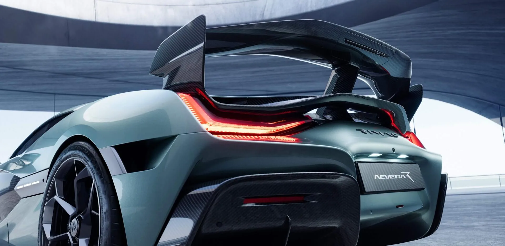
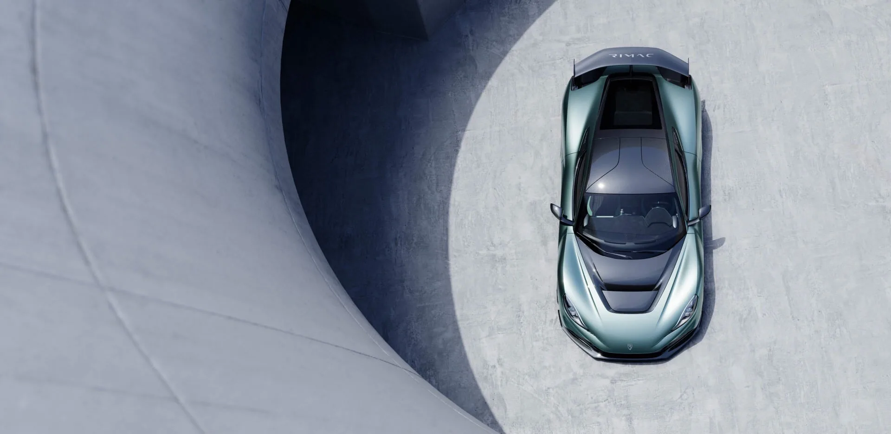
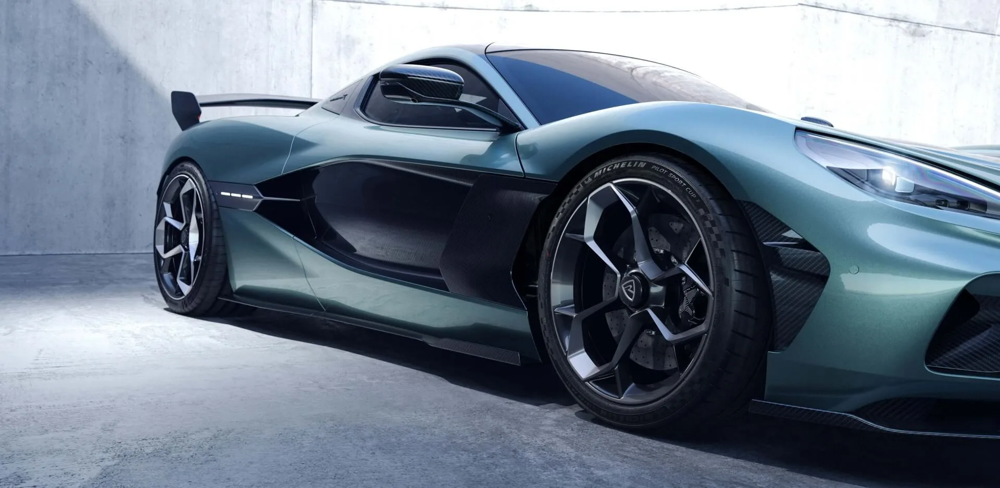
20/21 英寸双色分体设计,中央锁止;后轴负外倾角增大,弯中贴地性更好。
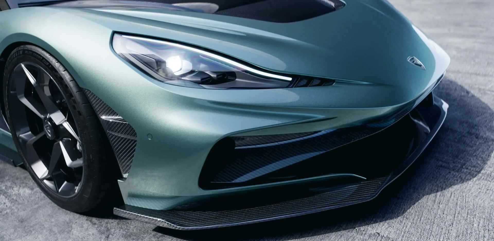
前舱盖通风口与前铲翼片强调宽度与贴地感——每一处开口都有冷却或气动理由。
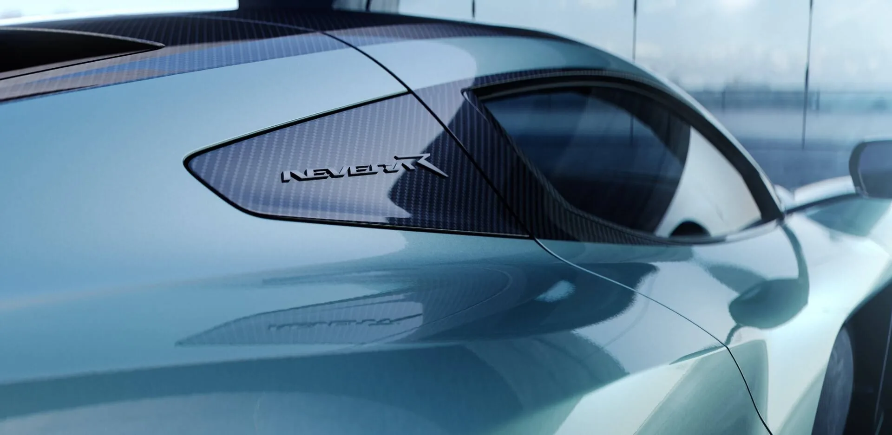
碳纤维面板蚀刻「NEVERA R」——R 的名字,写在离驾驶者最近的结构上。
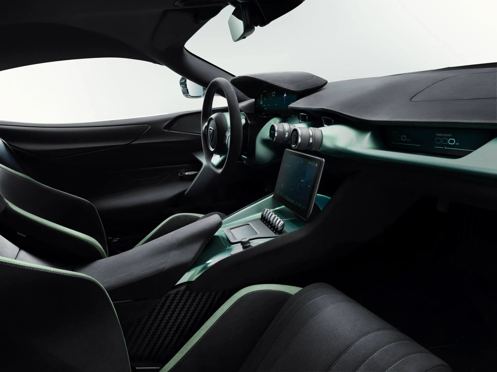
仪表台主体与中控台采用喷涂碳纤维,可选与车身同色或任意定制;副屏实时显示横向/纵向 G 值与功率输出。旋钮、缝线、阳极氧化件全部开放个性化。
两年后,同一条 Papenburg 直道:Nevera R 在交付前的最终验证中一天刷出 24 项纪录——把标准 Nevera 保持的每一项全部改写。
高速模式下的最终验证:0–100 km/h 1.72 秒,0–300 km/h 7.89 秒,0–400 km/h 17.35 秒,随后刹停——合计 25.79 秒,比两年前快 4.14 秒。极速 431.45 km/h,量产电动车极速纪录再度易主;全部数据由 Dewesoft 独立验证。
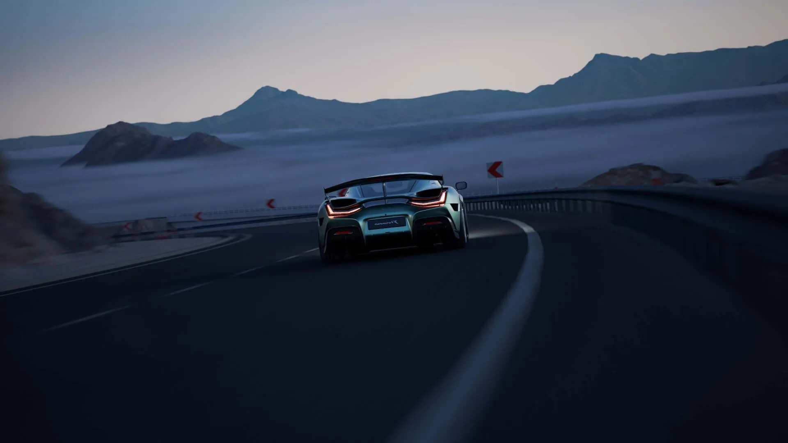
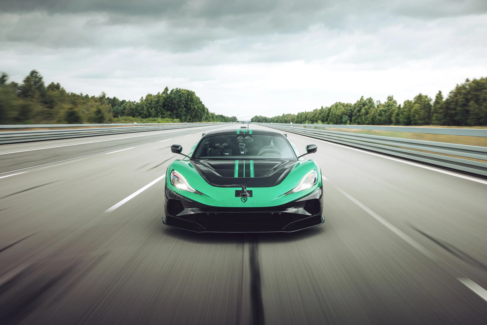
「Nevera 发布时,超跑性能的天花板似乎已经被摸到了。我们用一代车,完成了过去需要几十年才能完成的跨越——而 Nevera R,还要更快。破纪录写在我们 DNA 里,我们不会停在这里。」
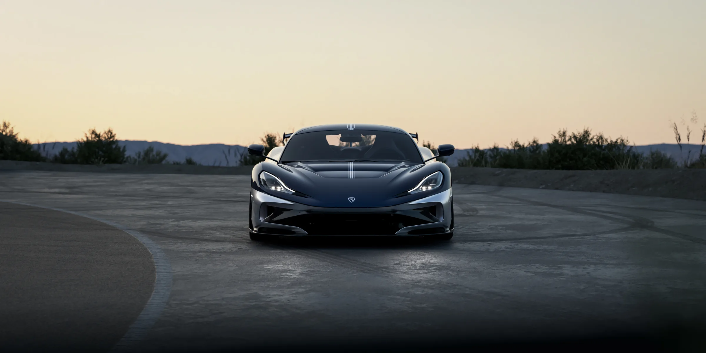
Nevera R 家族顶端是 Founder's Edition:全球 10 台,2025 年 8 月私下发布后一周内全部归属确定。首台于 2026 年 1 月 30 日在圣莫里茨冰湖交付——Côte d'Azur 蓝上体、钛银下体,2 mm 中央车顶条纹织入领带纹样与电路板图形。每一台都由 Mate Rimac 亲自交付。
Nevera 与 Nevera R 并排列清。数据来自 Rimac 官网车型页、官方技术规格文件与新闻稿。
Nevera R 功率Nevera:1,914 hp
最快 EV 极速2025 · Nevera R 实测
0–100 km/hNevera:1.81 s
0–400–0 km/hNevera:29.93 s
Nevera 数据来自官方《Technical Specifications》(2023-11 版,下载 PDF)与官网车型页;Nevera R 数据来自 2024-08-16 发布稿与 2025-07-09 纪录稿(Dewesoft 验证),极速同时标注官网口径。加速纪录均为标准 one-foot rollout 条件。